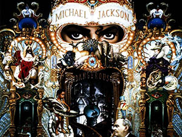

Get more documentation on the King of Pop from the original source @ wikipedia.org
©2018 vimmystique: freecodecamp tribute project

Micheal Joseph Jackson populaly known as Micheal Jackson was an American music artist who was known world wide as one of the all time best musician ever to live on God's good old planet earth. He was dubbed "the king of pop" and was an entertainer who was loved by both the young and the old worldwide. MJ for short was the swiss army knife of music and video entertainment.
MJ was born on the 29th of August 1958 in Gary, Indiana. He was a member of a family of eleven 11 with 8 siblings out of which the Jackson 5 came about.
MJ started his music career at the age of five with his senior siblings by forming a family band, which was the foundation of his music career.A normal traditional family band became the popular "Jackson 5" and then "the Jacksons", which actually brought so much fame to the Jackson family
He was later discovered by Motown Records in 1971 and in the ealy 1980s, he took over the world of pop music with music and videos that stormed both radio and televisions worldwide. Even though some critics found loopholes and attacked Jackson's reputation by calling out some of the music and videos to be violent and unsafe for public view especially children, he was rather well known humanitarian and a friend of children.
Micheal Jackson had quite a number of honors and awards for his songs, music videos, live performances and songwriting.
These awards include America Music Awards and his induction to the Hollywood Walk of Fame in the 1980s and Rock and Roll Hall of Fame, Dance Hall of Fame, Songwriters Hall of Fame (2002), Rhythm and Blues Music Hall of Fame, World Music Award (Best Selling Pop Male Artist of the Millenium), American Music Award (Artist of the Century Award), Bambi (Pop Artist of the Millennium Award),multiple Guiness World Records, Grammy legend and lifetime awards, number one singles and a whole lot more.
Out of about 10 albums, most of the songs became hits with the exceptional thriller from the thriller album in 1982 which is still the best selling album with over 66 million copies sold worldwide. Some of his hit songs include don't stop till u get enough, rock with you, in the closet, the way you make me feel, man in the mirror, smooth criminal, will you be there and billie jean to mention a few.
The music videos that came from the hitz songs made it the more merrier. His exceptional dancing styles like the the robot and moonwalk took his music videos both recorded and live performances to an unbelieveable heights.
Films like thriller, Moonwalker 1988 and Micheal Jackson's Ghost 1997 were must watch movies and pretty much all cinemas were filled to capacity upon thier release.
On the 25th of June 2009, Micheal Jackson was pronounced dead with reports of his personal physician given him overdose medications to aid him in his sleep. The entire world mourned the passing of the legend in various ways including airing of his music and videos for hours and live interviews and broadcast across all media platforms.
He memorial was set on 7th july, 2009 with live streaming views of over 31.1 million audience in US only. His record setting feats still continued with another worldwide sale of albums and online downloads.
If you want to make the world a better place, take a look at yourself, and make a change.― Michael Jackson
Get more documentation on the King of Pop from the original source @ wikipedia.org
©2018 vimmystique: freecodecamp tribute project